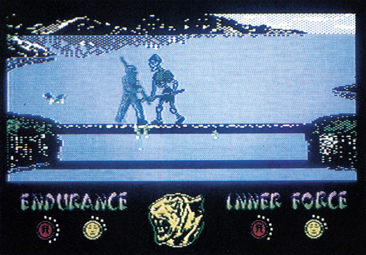
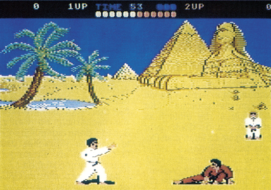

Spiele aus Fernost
Der Karateschlag hat in den letzten Monaten nichts von seiner Faszination verloren. Nur so läßt es sich erklären, daß wieder mal zwei Kampfsportspiele erschienen sind.
Zu den meistverkauften Produkten der letzten Monate zählen die zahlreichen Kampfsportspiele diverser englischer Softwarehäuser. Das hat natürlich zur Folge, daß immer mehr von diesen Spielen produziert werden. Bevor die Kampfsport-Welle zum Weihnachtsgeschäft völlig überschwappt (es sind mindestens vier weitere Spiele dieses Genres angekündigt), stellen wir Ihnen zwei besonders gute Vertreter dieser Gruppe vor, die schon jetzt erhältlich sind: »Way of the Tiger« und »International Karate«,
Eigentlich drei Spiele auf einmal bietet Way of the Tiger von Gremlin Graphics. Doch zunächst die Hintergrundstory: Sie wurden als Findelkind von den Mönchen des Gottes Kwon aufgezogen. Seit Ihrer Jugend bildeten Sie sich im Kloster in zahlreichen Kampfsporttechniken, um das Böse in der Welt später erfolgreich bekämpfen zu können. Ihre Lehre ist nun beendet und Sie müssen in drei Prüfungen beweisen, daß Sie würdig sind, den Titel eines Kwon-Ninja zu tragen. Folgende Aufgaben warten auf Sie: Durchwandern Sie unbewaffnet die Wüste von Orb und verteidigen Sie sich gegen die Gegner. Dann müssen Sie eine lange schlüpfrige Stange, die sich als Brücke über einem See befindet, bewachen, während von links und rechts gefährliche Angreifer auf Sie einschlagen. Im dritten Teil müssen Sie schließlich Ihre Fertigkeit mit dem Samurai-Schwert beweisen und gegen Ihren Lehrmeister persönlich antreten.
Way of the Tiger besteht aus insgesamt vier Programmen: Einem Hauptmenü und den drei einzelnen Spielphasen. Dadurch konnte in jede einzelne Phase eine Menge toller Grafik und Animation gepackt werden. Gerade das saubere Scrolling auf mehreren Ebenen und die detailreichen und bewegten Hintergrundgrafiken haben uns sehr beeindruckt. Way of the Tiger ist sehr abwechslungsreich durch die drei völlig unterschiedlichen Spielstufen. Jede der drei Phasen bietet neue Schlagtechniken und andere Gegner. Nur eines vermißt man bei Way of the Tiger: Einen Zwei-Spieler-Modus. Es kann leider nur alleine gegen den Computer gespielt werden.

Ohne tolle Hintergrundstory präsentiert sich International Karate von System Three. Zwei tapfere Karatehelden treten an verschiedenen Schauplätzen rund um die Welt gegeneinander an. Der sportliche Wettkampf steht also im Vordergrund. Die beiden Recken schlagen sich an so illustren Schauplätzen wie die Pyramiden in Ägypten, die Oper von Sydney oder vor dem Zuckerhut in Rio de Janeiro.

Die Kampfregeln sind unterschiedlich, je nachdem ob ein Spieler gegen den Computer oder zwei Spieler gegeneinander spielen. Im Ein-Spieler-Modus dauert eine Runde maximal dreißig Sekunden. Gewinnt der Spieler, muß er gegen einen weiteren, besseren Computer-Gegner antreten.
Bei zwei Spielern hingegen wird sechzig Sekunden lang gekämpft. Sollten einem der Spieler innerhalb der Spielzeit die Punkte ausgehen, hat er verloren.
Sieht man International Karate auf dem Bildschirm, denkt man unwillkürlich an das fast schon ein Jahr alte »Way of the Exploding Fist« von Melbourne House. Doch im direkten Vergleich schneidet International Karate wesentlich besser ab. Es spielt sich einfach besser und genauer als Exploding Fist, da die einzelnen Schläge präziser ausgewertet werden. Außerdem ist der Spielablauf wesentlich schneller. Die Grafik ist noch detailreicher, die Animation wirkt noch echter. Sehr toll auch die Musik: Ein 11 Minuten langer Soundtrack von Rob Hubbard läßt aufhorchen. Dazu tönen digitaliserte Kampfschreie.
Von der insgesamt sehr hohen Qualität von International Karate zeugt schon, daß der bekannte amerikanische Spieleproduzent Epyx das Programm in Amerika unter dem Titel »World Championship Karate« vertreiben wird. Für zwei Spieler ist es das im Augenblick beste Kampfspiel. Aber auch Way of the Tiger ist nicht von schlechten Eltern und für Solo-Spieler sicherlich interessanter, da abwechslungsreicher.
(bs)| Titel | International Karate |
|---|---|
| Spielidee | 7/15 |
| Grafik | 12/15 |
| Sound | 13/15 |
| Schwierigkeit | 8/15 |
| Motivation | 12/15 |
| Besonderheiten | Ein oder zwei Spieler |
| Hersteller | System 3/Activision |
| Preis | 25,— (Kass.) |
| Bezugsquelle | Ariolasoft, Carl-Bertelsmann-Str. 24, 4830 Gütersloh |
| Titel | Way of the Tiger |
|---|---|
| Spielidee | 9/15 |
| Grafik | 13/15 |
| Sound | 9/15 |
| Schwierigkeit | 11/15 |
| Motivation | 11/15 |
| Besonderheiten | Drei völlig verschiedene Spielstufen |
| Hersteller | Gremlin Graphics |
| Preis | 39,— (Kass), 59,— (Disk.) |
| Bezugsquelle | Rushware, An der Gümpgesbrücke 24, 4044 Kaarst 2 |